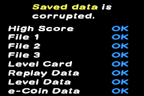

Super Mario Advance 4 - Super Mario Bros. 3 (Europe) (En,Fr,De,Es,It) (Rev 1) (Virtual Console)
Flash 1M Save Format Mapped (Family Spec) gbakit Built-In
Cartridge Identity
- Game Code
AX4P(FamilyAX4)- Header Title
SUPER MARIOD- Maker / Revision
01/ rev1- ROM Size
- 8.0 MiB (8,388,608 B)
- Save Media
Flash 1M- SHA-256
bc2e2a31c8f479b56b8017ebeda64bebfc88fef0fdfcb82ac96c9ad2633a28f5- Engine / SDK Group
comm-001(196 families)
Screenshots


Battery Save Format Specification (Family Shared)
This release shares its save architecture with canonical family reference Super Mario Advance 4 - Super Mario Bros. 3 (Europe) (En,Fr,De,Es,It) (Family
AX4).
Open Family Save Format Spec (AX4P)Download save-format.json
- Canonical Specification
AX4P· 16 mapped fields · 3 verified checksum(s) · Confidence: MEDIUM- gbakit Built-In Support
- Built-in (AX4P)
gbakit save verify AX4P save.sav
gbakit save decode AX4P save.sav
gbakit save fix AX4P damaged.sav -o repaired.savObserved Battery Save Layout
- Fill Byte & Active Size
0x00fill · 54,904–131,072 / 131,072 B active (entropy 1.11 bits/B)- Active Offset Ranges
0x0–0x1FFFF(1 total)- ASCII Magic / Headers
SMA4MWP0,M3P0zl,ppPp,M3P0,S4CP- Observed Variable Regions
- 77,672 bytes across 17 spans:
0x0–0x18,0x1B–0x77,0x7D–0x738,0x73A–0x7D1,0x7D3–0x3FFF,0x6000–0x10018,0x1001B–0x10077,0x1007D–0x10738, +9 more - Candidate Checksum/Counter Spans
- None
Hardware MMIO Subsystems
ppu_display0x80004bc,0x80e82bcsave_bus_sram_flash0x80eb060,0x80eb084,0x80eb2d8,0x80eb43c,0x80eb708
Regional Variants & Revisions (Family AX4)
- Super Mario Advance 4 - Super Mario 3 + Mario Brothers (Japan) (
AX4J, 4 MiB) - Super Mario Advance 4 - Super Mario 3 + Mario Brothers (Japan) (Rev 1) (
AX4J, 4 MiB) - Super Mario Advance 4 - Super Mario 3 + Mario Brothers (Japan) (Rev 2) (
AX4J, 4 MiB) - Super Mario Advance 4 - Super Mario 3 + Mario Brothers (Japan) (Rev 2) (Switch Online) (
AX4J, 8 MiB) - Super Mario Advance 4 - Super Mario 3 + Mario Brothers (Japan) (Rev 2) (Virtual Console) (
AX4J, 8 MiB) - Super Mario Advance 4 - Super Mario Bros. 3 (Europe) (En,Fr,De,Es,It) (
AX4P, 8 MiB) - Super Mario Advance 4 - Super Mario Bros. 3 (Europe) (En,Fr,De,Es,It) (Rev 1) (
AX4P, 8 MiB) - Super Mario Advance 4 - Super Mario Bros. 3 (Europe) (En,Fr,De,Es,It) (Rev 1) (Switch Online) (
AX4P, 8 MiB) - Super Mario Advance 4 - Super Mario Bros. 3 (USA) (
AX4E, 4 MiB) - Super Mario Advance 4 - Super Mario Bros. 3 (USA) (Rev 1) (Switch Online) (
AX4E, 8 MiB) - Super Mario Advance 4 - Super Mario Bros. 3 (USA) (Rev 1) (Virtual Console) (
AX4E, 8 MiB) - Super Mario Advance 4 - Super Mario Bros. 3 (USA, Australia) (Rev 1) (
AX4E, 4 MiB)